Redlining in Richmond, VA: the 1937 federal mortgage map, drawn on the ground it graded
In 1937 a federal agency, the Home Owners' Loan Corporation, graded Richmond's residential areas from A to D to rate what it called the "security" of each for mortgage lending. This page draws that map on the ground it graded, with the buildings standing then, and follows what was built and cleared on the D land up to 1977.
Read this as a PDF: phone edition, large-screen edition
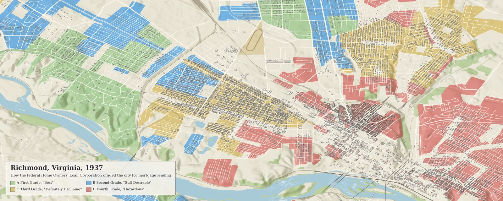
Fig. 1. Richmond in 1937, from the West End at the left to Church Hill at the right, tinted with the grades a federal agency gave each residential area. The whole graded city, with its twelve D areas labeled, is further down.
About this page. Chris Busse, a Richmond artist, made this page with Claude. It is drawn from public records: the Home Owners' Loan Corporation's 1937 map and forms at the National Archives, OpenStreetMap, City of Richmond parcel records and USGS elevation data. Its facts were checked against the sources listed below in November 2026. Corrections are welcome through the contact page, and changes will be dated here.
In short
"Redlining" today means a lender's refusing credit because of the neighborhood a borrower lives in, and the word comes from the red of the lowest grade on a set of federal maps [FRED 2021]. In 1937 a federal agency, the Home Owners' Loan Corporation (HOLC), surveyed Richmond and graded its residential areas from A, "Best", to D, "Hazardous" [FRASER, Richmond]. Its forms recorded ten of Richmond's twelve D areas as Black; of the other two, one was vacant land and one was recorded as white [FRASER, Richmond area descriptions]. Drawn on the ground and measured, the D land lies lowest of the four grades. It lies nearest downtown, where the highways converge: D was 30% of the graded land and holds 65% of the limited-access highway inside it, where location alone would give it about 56% (how this is measured). The Library of Virginia writes that the city's public housing was built, by and large, in D areas [LVA timeline]. Whether the map itself caused any of this is disputed among researchers; three readings are set out below, and the page does not choose between them. Terms are explained in the glossary.
On this page: the 1937 map · Richmond's laws before it · one A area and one D area · the whole city · what was built and cleared · the dispute · the twelve D areas · how we know · sources
The pictures show buildings and ground. What these places meant to the people who lived there is theirs to tell, and the institutions listed under Whose work this rests on keep those histories.
What the 1937 map was: a short guide for readers new to it
The Home Owners' Loan Corporation and why Congress made it
In the Great Depression, Congress created the Home Owners' Loan Corporation (the HOLC) in the Home Owners' Loan Act, signed on June 13, 1933, to refinance the mortgages of home owners in distress [Harriss 1951; Rose 2022]. Between August 1933 and June 1936 it made over one million refinancing loans, 1,017,821 by Harriss's count, for $3.1 billion; it stopped taking applications in June 1935 and made its last loans in June 1936 [Harriss 1951]. By an estimate from the Federal Reserve Bank of Chicago, it had already made 90% of its loans before its mapping project began in 1935 [Rose 2022]. Price Fishback and coauthors conclude that the maps had virtually no influence on the HOLC's own refinancing, and in 1940 Black home owners held 4.5% of its mortgages, about their share of the country's nonfarm home owners [Fishback et al. 2023]. Studying Philadelphia, Amy Hillier found that the HOLC made more than 60 percent of its loans there to areas later colored red [Hillier 2003].
The city survey and its four grades
From 1935 to 1940 the HOLC surveyed the residential areas of 239 American cities in its City Survey Program and drew a color-coded map of each, rating how risky it was to make mortgage loans in each neighborhood; the Federal Reserve Bank of St. Louis (the St. Louis Fed) writes that the practice informed how the Federal Home Loan Bank Board supervised lenders [FRED 2021; National Archives, RG 195; Hillier 2003]. Whether and how lenders used the maps afterward is part of the dispute below. Richmond's map is titled "Residential Security Map" [FRASER, Richmond]. Each area got one of four grades:
| Grade | On Richmond's map legend | The HOLC's name for it | Color on the map | What the grade was meant to say |
|---|---|---|---|---|
| A | First Grade | "Best" | green | values expected to rise or hold high |
| B | Second Grade | "Still Desirable" | blue | values expected to hold |
| C | Third Grade | "Definitely Declining" | yellow | values expected to fall |
| D | Fourth Grade | "Hazardous" | red | old housing, or near nuisances such as industry; in Richmond, 10 of the 12 D areas recorded as Black |
Richmond's map names its grades only by number: its legend reads "First Grade" to "Fourth Grade" [FRASER, Richmond]. The names in quotation marks are the HOLC's too: they are handwritten on the legend of its map of Atlanta, held in the same National Archives records [FRASER, Atlanta], and the St. Louis Fed's summary uses them, with "Declining" for C [FRED 2021]. This page uses both, with the names always in quotation marks as the HOLC's words. The last column follows the St. Louis Fed's summary, which does not mention race [FRED 2021]; its last clause is from Richmond's forms [FRASER, Richmond area descriptions].
Richmond's map, prepared by the HOLC's Division of Research & Statistics, is dated April 3, 1937. The HOLC drew it on the city's own base map, "City of Richmond, Virginia and Environs", made by the Department of Public Works in 1923 and revised to August 1, 1936. It is held by the National Archives in the records of the Federal Home Loan Bank Board, Record Group 195 [FRASER, Richmond; National Archives, RG 195]. It grades 7 areas A, 15 B, 14 C and 12 D [counted on the map], the same count the University of Richmond's Digital Scholarship Lab gives in Mapping Inequality, the project that digitized and published these maps for the whole country [Mapping Inequality]. The map numbers the areas within each grade, A1 to A7 and so on, and one D area carries the number 11½, written D11.5 here.
The area descriptions: one printed form for each area
For every area the surveyors filled in a printed form, an "area description". Its fields ask for the terrain, what made the area more or less desirable, the residents' "type" (filled in with an occupation, a race or a rank), family incomes, the share of foreign-born residents, the share of Black residents (in a field headed "Negro"), any "infiltration" (on four of Richmond's D forms, D2, D5, D6 and D7, the entry is "Negroes"), house types, ages and repair, prices and rents, how many homes were lived in by their owners, and how much mortgage money was available [FRASER, Richmond area descriptions]. The mortgage-money field records what the person who supplied the form's information said local lenders were offering; by 1937 the HOLC itself had stopped lending [Harriss 1951]. Richmond's forms name those people in their last field: J. D. Carneal on D1 to D9, and A. L. Adamson, a South Side realtor, on D10, D11 and D11.5 [FRASER, Richmond area descriptions]. Economists who have studied the maps describe the forms as recording how local real estate professionals judged lending risk [Fishback et al. 2023].
The forms record race throughout, and Richmond's use it to judge places and houses. The form for C7, on the north side, faults its area for lying too near D2 [FRASER, Richmond area descriptions, p. 29]. The form for C4 says its area is yellow "largely because" its school for white children lies in D8 and because Black residents of D8 pass through it to reach William Byrd Park [FRASER, Richmond area descriptions, p. 26, field 14].
Content note: the next paragraph quotes a racial slur from the 1937 form.
The form for D11.5 (Blackwell) rated the condition of its houses by the race of the people who would live in them. So that readers can see the standard the forms applied, this page quotes that field once, as the HOLC's form recorded it in 1937, and paraphrases the forms' racial terms everywhere else. The repair field reads: "Bad for whites; Fair for darkies" [FRASER, Richmond area descriptions, p. 47, field 6d].
Where the word "redlining" comes from
The St. Louis Fed writes that the word comes from the red the maps used for the lowest grade, and that it also names discriminatory practices in lending [FRED 2021]. At Northwestern University, John McKnight and colleagues investigated redlining, banks' systematic denial of mortgages and other financial services to people in minority neighborhoods; the university's Institute for Policy Research credits that work with laying the groundwork for two federal laws [Northwestern IPR 2024]. The Home Mortgage Disclosure Act, enacted in 1975, requires many lenders to report and publicly disclose their mortgage lending [CFPB, HMDA]. The Community Reinvestment Act, enacted in 1977, directs bank regulators to encourage banks to meet the credit needs of the communities where they do business, low- and moderate-income neighborhoods included [Federal Reserve, CRA]. What the HOLC's own map did is the subject of the dispute below.
Richmond's own racial lines before the map, 1871 to 1948
Richmond drew its lines long before 1937. In 1871 the city's wards were redrawn to create a single Black-majority ward, Jackson Ward [LVA timeline]. From 1888 electric streetcars opened suburbs, most of them kept white by deed restrictions [LVA timeline]. In April 1911 City Council adopted an ordinance segregating where white and Black residents could live, and in 1912 the General Assembly let every Virginia city do the same [LVA timeline; Gray-Sparks]. The Supreme Court struck such ordinances down in Buchanan v. Warley in 1917 [LVA timeline]. Richmond then passed a new ordinance, based on Virginia's Racial Integrity Act, that barred residents from living in a neighborhood where they could not marry a member of the majority population. Encyclopedia Virginia dates it 1924 and the Library of Virginia 1929; a federal appeals court struck it down in 1929 [Gray-Sparks; LVA timeline]. Racial covenants, clauses in deeds that restricted who could buy or live in a house, stayed enforceable until Shelley v. Kraemer in 1948 [LVA timeline].
One A area and one D area, form by form: A5, Windsor Farms, and D1 (Jackson Ward)
Before the whole city, here are two areas the HOLC graded at the two ends of its scale, chosen for that reason: A5, Windsor Farms, in the West End beside the James, and D1 (Jackson Ward, Gilpin, Carver and Navy Hill), north of downtown. A name after a comma is the one typed at the head of the 1937 form; a name in parentheses is today's.
A5, Windsor Farms: what the form recorded, and the ground
T. C. Williams, a tobacconist, founded Windsor Farms in 1926 on a 444-acre tract beside the river, laid out by the planner John Nolen as an English village around a green [TCLF, Windsor Farms]. Eleven years later the HOLC form for A5 recorded rolling ground, hilly toward the river; residents whose "type" it gave as "Best people"; family incomes of $7,500 and up; every home lived in by its owner; brick houses on 100-foot lots up to estates of 10 and 15 acres, two to eight years old, in excellent repair; and mortgage money for buying a home rated good. In the field for favorable influences it called A5 the most desirable area in or about Richmond [HOLC area description A5].

Fig. 2. A5, Windsor Farms, graded A by the Home Owners' Loan Corporation (HOLC) in 1937, as it stood then (left of the divider) and today (right); drag the divider, or move it with the arrow keys. In 1937 the curving streets were laid out and the houses still few: of today's 561 parcels (lots in the city assessor's records, which give a year built), 15% were built by 1937 and 78% between 1938 and 1977 [City of Richmond parcels]. The Powhite Parkway and its ramps run along A5's east edge: 0.8 km of limited-access carriageway lies inside it, all there is in A land [measured here]. How this was made: the grade outlines redrawn with Claude from the National Archives scan of the 1937 map and positioned with OpenStreetMap street corners (see How we know); for 1937, buildings standing today that the city dates to 1937 or before; today, OpenStreetMap's buildings and streets (OpenStreetMap is the volunteer-made map of the world); the ground from 2010s lidar, laser elevation measured from the air, with heights drawn three times true so the hills read. See How we know.
D1 (Jackson Ward, Gilpin, Carver and Navy Hill): what the form recorded, and the ground
Jackson Ward was then the center of Richmond's Black community, the Library of Virginia writes [LVA, House to Highway], known as "Black Wall Street" and the "Harlem of the South" for its Black-owned businesses and entertainment venues [City of Richmond, Jackson Ward]. D1 is drawn in several pieces north of downtown, from Jackson Ward through Apostle Town, the neighborhood later cleared for Gilpin Court, to Navy Hill. Its form recorded rolling ground; a population 95% Black; family incomes of $350 to $750 a year; one home in five lived in by its owner; single houses, 40% brick and 60% frame, forty years old and more, in poor to very poor repair; and mortgage money for buying a home, as the form's informant reported local lenders offering it, at 60% of appraisal (read plainly, loans of up to 60% of a house's appraised value). It wrote that the population was falling "because of demolition to save taxes" [HOLC area description D1].

Fig. 3. D1 (Jackson Ward, Gilpin, Carver and Navy Hill), graded D by the HOLC in 1937, as it stood then (left) and today (right). I-95 and I-64 run 5.9 km of carriageway (one direction of a divided highway) through D1; 4.1 km of it is the old Richmond–Petersburg Turnpike, and the rest is I-64 where it runs without I-95 [measured here]. Today, a circle marks Gilpin Court at the address in the record of the federal Department of Housing and Urban Development (HUD), 1000 St Paul Street, placed approximately on that street's south end [HUD via ProPublica]. In 1937 the blocks the Sanborn fire-insurance maps cover are dense; elsewhere only buildings that still stand are drawn, so D1 looks emptier than it was. How this was made: as the A5 figure, with Jackson Ward's buildings from the 1925 and 1952 Sanborn maps and its ground before the Turnpike's cut, as the Jackson Ward story drew them.
After 1937 the Richmond Housing Authority cleared Apostle Town and dedicated Gilpin Court, public housing, there on April 28, 1943; a newspaper report that month counted 301 units, Encyclopedia Virginia 300, and Encyclopedia Virginia says 250 Black families were displaced [Craig 2025; Gray-Sparks]. The Richmond–Petersburg Turnpike, a toll expressway now part of I-95, was proposed in 1946 and defeated twice in referendums; the General Assembly then created the Richmond–Petersburg Turnpike Authority, with the power of eminent domain, which built the road through the ward in the 1950s. It opened on July 1, 1958 [Gray-Sparks; LVA timeline; VCU Libraries]. By 1957 the Richmond Times-Dispatch estimated that about 1,900 Black families, about 10% of the city's Black population, had been displaced by it and related work [Gray-Sparks]. Virginia Commonwealth University's (VCU's) medical campus now covers most of Navy Hill [Gray-Sparks]. The Jackson Ward story follows the Turnpike block by block.
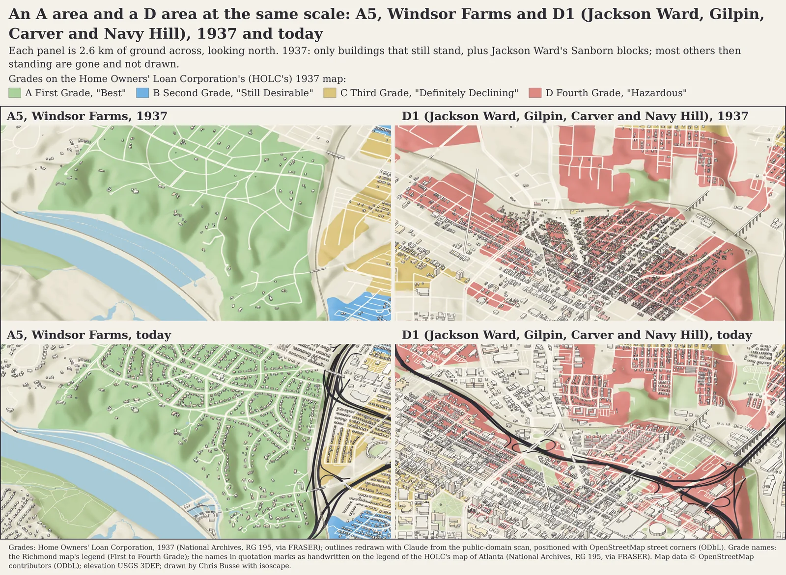
Fig. 4. A5, Windsor Farms, and D1 (Jackson Ward, Gilpin, Carver and Navy Hill) side by side at one scale, 2.6 km of ground across each panel, 1937 above and today below. The difference in lot size reads at a glance: the form's 100-foot lots and estates in A5, and D1's single houses on narrow lots. The 1937 panels draw only buildings that still stand, plus Jackson Ward's Sanborn blocks. How this was made: as the two figures above.
The whole city in 1937: the four grades on Richmond's terrain
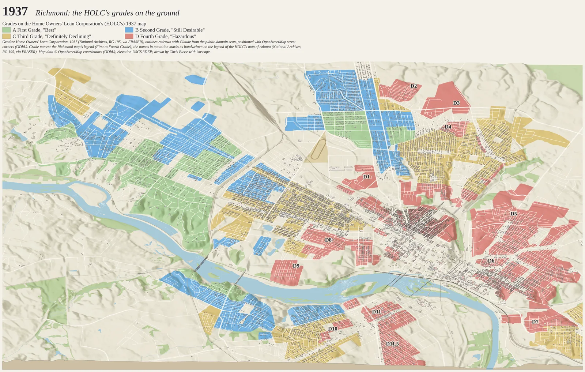
Fig. 5. Richmond in 1937, seen from the south, with the grades the Home Owners' Loan Corporation gave Richmond's residential areas tinted on the ground; the twelve D areas are labeled. Untinted land was not graded: downtown, industry, rail yards, parks and land outside the surveyed city [FRASER, Richmond]. How this was made: the grade outlines redrawn with Claude from the National Archives scan of the 1937 map and positioned with OpenStreetMap street corners (see How we know); buildings standing today that the city dates to 1937 or before, and in Jackson Ward those on the 1925 and 1952 Sanborn maps; the ground from 2010s lidar, heights three times true. Most buildings of 1937 that are gone are missing, so the picture undercounts the densest and most cleared areas most.
Measured on the lidar, the D land lies lowest, as names like Fulton Bottom already say. Half of it is below 47 m above sea level, against 57 m for C, 61 m for A and 62 m for B, and a tenth of it is below 27 m. It is about as steep as C land and a little steeper than B: about 6% of D, 7% of C and 5% of B is steeper than 10 degrees. The steepest graded land is A: 16% of it is steeper than 10 degrees [measured here].
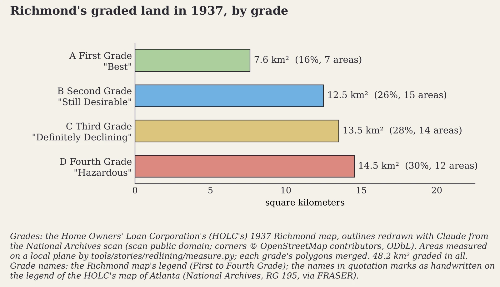
Fig. 6. Richmond's graded land in 1937 by grade, measured from the redrawn outlines. D was 30% of the graded land, the largest of the four grades by area. That is a share of the land; D areas were denser, so it says nothing of how many people lived in them. How this was made: each grade's outlines merged and measured on a local plane.
What was built and cleared on graded land, 1943 to 1977
The 1937 grades, the housing sites and the highway routes may share causes. VCU Libraries writes that planners and turnpike officials chose for the Turnpike's path areas they considered "blighted" or home to many Black Richmonders [VCU Libraries], and Encyclopedia Virginia that the city's 1946 master plan recommended demolishing Black neighborhoods it judged to be deteriorating [Gray-Sparks]; the 1937 forms had recorded the same neighborhoods' race and the age of their houses. The pictures and measures here show where things were built. Why they were built there is taken up in the dispute below.
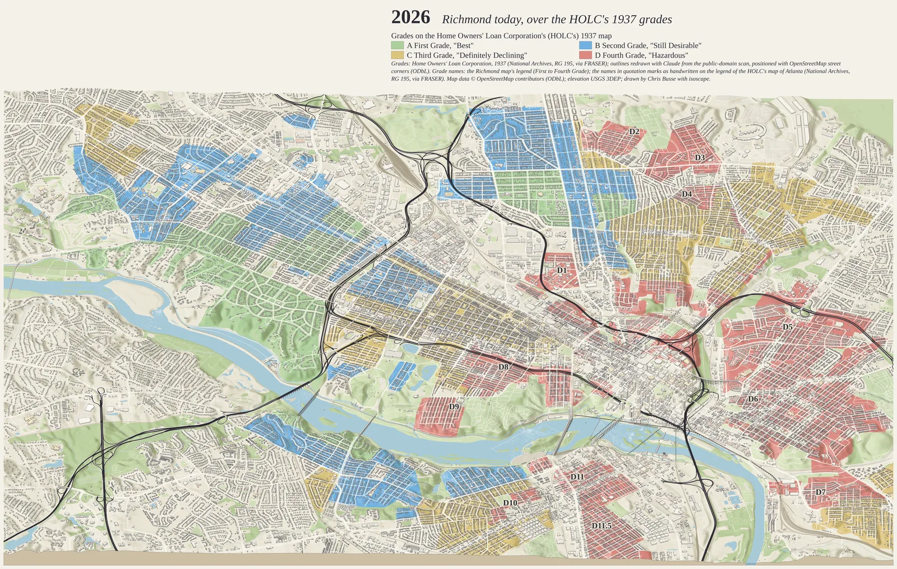

Fig. 7. Richmond in 1937 (left of the divider) and today (right), the same view, with the 1937 grades under both. Today's limited-access highways, entered only by ramps, are drawn in black. How this was made: as the 1937 figure; today, OpenStreetMap's buildings and streets, with its highway and ramp categories for limited-access roads in black.
The Library of Virginia writes that, by and large, the city's public housing was built in neighborhoods the HOLC had graded D [LVA timeline]. The sources say where each project below is; this page's drawing says which area that is. The Richmond Housing Authority, later the Richmond Redevelopment and Housing Authority (RRHA), built the public housing among them [Craig 2025; Gray-Sparks].
- Gilpin Court, in D1, 1943, on cleared Apostle Town, enlarged in 1957 for families the Turnpike displaced [Craig 2025; Gray-Sparks].
- The Richmond–Petersburg Turnpike, through D1, built in the 1950s and opened July 1, 1958, now I-95 and I-64 [LVA timeline; VCU Libraries]; about 1,900 Black families displaced by 1957 by the Times-Dispatch's estimate [Gray-Sparks].
- Fairfield and Whitcomb Courts, 1958, opened for more of the families highway building displaced [Gray-Sparks]. Most of the addresses in their HUD records that OpenStreetMap places lie in D5 [HUD via ProPublica; measured here].
- Mosby Court, in D5, 1962: the City of Richmond's 17th Street Urban Renewal Project cleared 150 acres of Shockoe Valley and displaced 1,300 mostly Black residents, many of whom moved to Mosby Court, which opened in 1962 in an isolated part of the East End [Gray-Sparks]. HUD's record gives its address as 1909 Accommodation Street [HUD via ProPublica], and the whole of Accommodation Street lies inside D5 [measured here].
- D7, Fulton, 1967 to the late 1980s: in 1967 a study sponsored by the RRHA designated Fulton Bottom, a neighborhood of about 850 homes, churches, schools and stores on 200 acres, a "slum". The 1970 renewal plan would displace about 785 households, nearly 3,000 people. The RRHA began buying and razing Fulton properties in the early 1970s, and the last homes on Denny Street came down in the late 1980s [Gray-Sparks].
- D11.5 (Blackwell), 1970: 464 scattered-site public housing units were built in the neighborhood [Eshleman 2018].
- D8 (Randolph) and the Downtown Expressway, 1973: HUD approved the 380-acre Randolph Urban Renewal Project; its planning study expected about 1,800 families and individuals to be displaced, and Encyclopedia Virginia gives its aims as "slum clearance" and making way for the six-lane Downtown Expressway [Gray-Sparks]. The Library of Virginia writes that the expressway cut the Randolph and Oregon Hill neighborhoods in half [LVA timeline].
Not all of the city's public housing went to D land. Creighton Court and Hillside Court, which the housing authority also built (no opened source dates them), stand on land the HOLC did not grade, by nearly all of their HUD addresses that OpenStreetMap places, and Hillside Court served low-income white residents [Craig 2025; HUD via ProPublica; measured here].
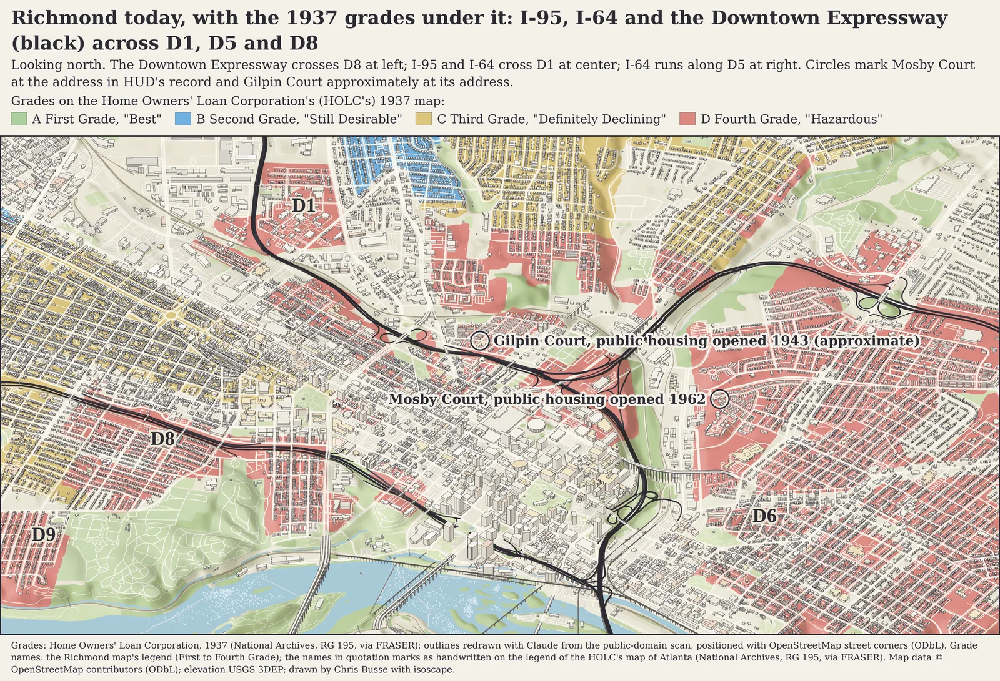
Fig. 8. D1, D5 and D8 today, with the interstates and the Downtown Expressway in black over the 1937 grades. Circles mark Mosby Court, public housing opened in 1962, in D5 at the address in HUD's record, and Gilpin Court, opened in 1943, in D1 approximately at its address, on the south end of St Paul Street [HUD via ProPublica]; OpenStreetMap, as cached here, has no outline named for either, so they are marked as points. How this was made: as the "today" figure above, cropped.
Where the highways run, measured against a fair comparison
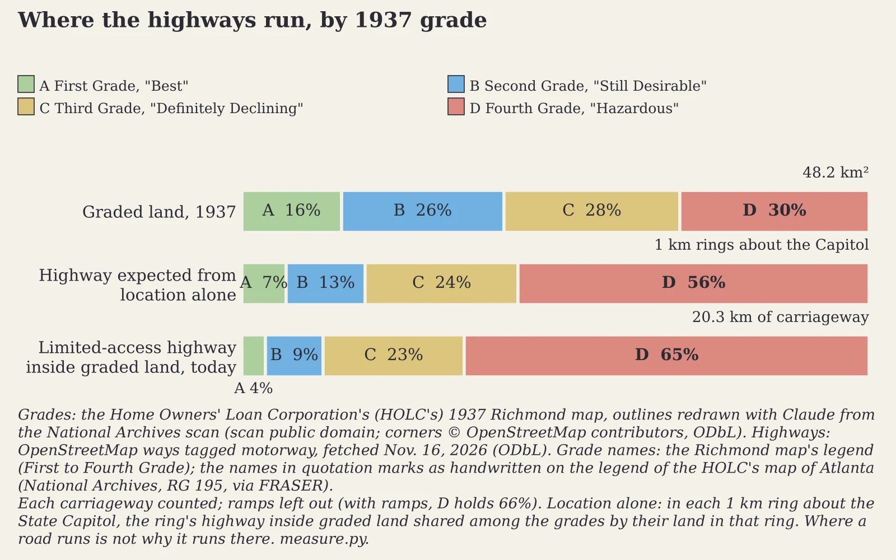
Fig. 9. Three bars, each split by 1937 grade: the graded land; the highway each grade would hold if location alone decided it; and the limited-access highway inside graded land today. Of the 20.3 km of carriageway inside the 1937 graded areas, 65% lies in D areas, which were 30% of the graded land; 23% lies in C. D land lies nearest downtown, where the roads converge, and location alone would give it about 56% (11.3 km of the 13.1 km it holds) [measured here]. How this was made: OpenStreetMap's roads in its highway category, each carriageway counted, cut by each grade's outlines; for location alone, rings 1 km wide about the State Capitol, each ring's highway shared among the grades by their land in that ring.
Half of the D land lies within 2.6 km of the State Capitol; for C the distance is 4.1 km, for B 5.7 km and for A 6.1 km. So the fair comparison for the D land is other land near the center. Per square kilometer, D land carries 0.90 km of this highway, against 0.75 km on the ungraded land in the citywide view (downtown, industry, rail yards, parks, the river and land outside the 1937 survey) and 0.34 km on C. Within 4 km of the Capitol, where 12.8 km² of the D land lies, D land carries 1.02 km per square kilometer, against 0.77 km on the ungraded land and 0.16 km on C [measured here]. Most of the gap between D's share of the land and its share of the highway comes from where the D land lies. D still holds more highway than its location alone predicts, and much more than C land at the same distance.
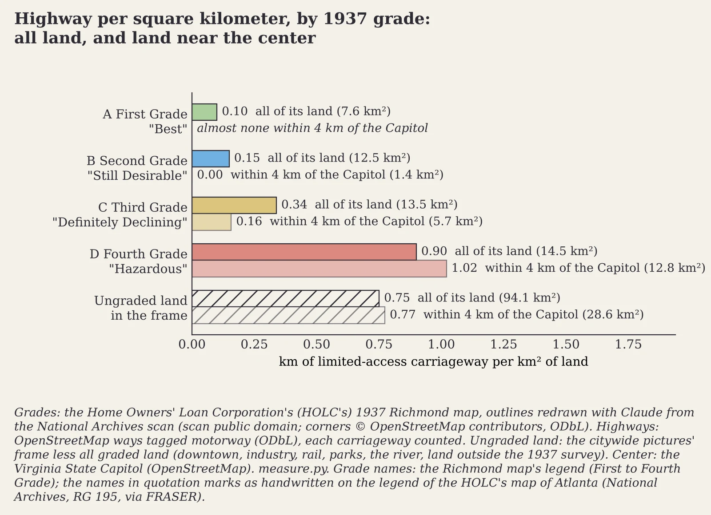
Fig. 10. Kilometers of limited-access carriageway per square kilometer of land, by 1937 grade and for the ungraded land in the citywide view, over all of each grade's land and over its land within 4 km of the State Capitol. How this was made: as the chart above; the Capitol's position from OpenStreetMap.
Inside D land the highway runs through three numbered areas, D1 (5.9 km, 4.1 km of it the old Turnpike), D8 (3.3 km, the Downtown Expressway) and D5 (3.3 km, I-64), and for 0.6 km through small D pieces the map leaves unnumbered (see How we know). Most limited-access mileage lies outside the 1937 graded areas altogether: of the 91 km inside the citywide view, 20.3 km lie in graded land, and the cached OpenStreetMap data around the view holds 113 km in all [measured here].
On why the Turnpike runs where it does, the page has one source. VCU Libraries writes that city planners and turnpike officials selected for its path areas they considered "blighted", or with high concentrations of Black Richmonders [VCU Libraries]. Encyclopedia Virginia dates the Turnpike Authority's creation to 1954 and VCU Libraries to 1955 [Gray-Sparks; VCU Libraries]. The Jackson Ward story follows how the Turnpike came to run through the ward.
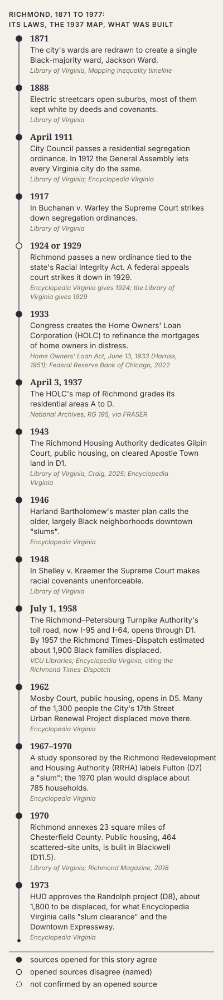
Fig. 11. Richmond, 1871 to 1977: the city's own ordinances, the HOLC's map, and what was built and
cleared later. A solid disc marks a date that the sources opened for this story agree on; a ring
marks one where they disagree, with each named. How this was made: drawn in code from the
dates in timeline.ts, each with its source.
Did the 1937 map cause what followed? Three readings
The plain question is this. Did the map cause later harm by steering money away from the areas it marked red? Or did it record a city already divided, whose later history had other causes? Researchers have read the same maps both ways. All three readings below find that the D areas were already poorer and more heavily Black when the maps were drawn; they differ on how much the HOLC's map itself added afterward. This page does not choose between them. Each is set out in its authors' terms.
- Lower-graded sides of the map lines fell behind for decades. Daniel Aaronson, Daniel Hartley and Bhashkar Mazumder compare neighborhoods on either side of the maps' grade boundaries, nationally, with similar boundaries the maps did not draw, and find that the maps "led to reduced home ownership rates, house values, and rents and increased racial segregation in later decades", which they attribute to reduced access to credit and the disinvestment that followed [Aaronson et al. 2021]. They also report that the two sides of the lines already differed before the maps, and they weight their comparison boundaries to match those differences. Along the lines between D and C areas, the gap in the share of Black residents peaked at 15 to 17 percentage points between 1950 and 1970 and stood at about 3 points by 2010. They write that their estimates include any effect of the Federal Housing Administration (FHA) where its lines and the HOLC's agree [Aaronson et al. 2021], and a later paper by the same group treats such estimates as a proxy for the broader practice of redlining that arose largely through federal housing policy [Aaronson et al. 2022].
- The maps recorded disadvantage that was already there. Price Fishback, Jessica LaVoice, Allison Shertzer and Randall Walsh find that the maps show how real estate professionals judged lending risk by race, income and housing quality, and that racial bias in drawing the maps explains at most 4 to 20 percent of the concentration of Black households in D zones; they attribute most of it to earlier decades of disadvantage and discrimination [Fishback et al. 2023].
- The other federal agency drew its own lines first. Price Fishback, Jonathan Rose, Kenneth Snowden and Thomas Storrs find that the FHA, the federal agency that insured private lenders' mortgages, did not insure mortgages in low-income urban neighborhoods, where most urban Black Americans lived, from its start in the 1930s, before the HOLC maps, while the HOLC lent broadly in those neighborhoods and to Black home owners; they conclude the HOLC maps had little effect on either agency's lending. Their loan records are every loan the FHA insured from 1935 to 1940 in Baltimore, Peoria and Greensboro, North Carolina [Fishback et al. 2024; Rose 2022]. The FHA's early underwriting manuals, the first in 1935, advised against insuring loans in areas that were racially mixed or might become so [Fishback et al. 2024; Hillier 2003].
Under the dispute lies a question of fact: did private lenders see the HOLC's maps? Amy Hillier found that the maps were not widely distributed and that none were given to private interests, though some private lenders and the FHA had access to them. She concluded that lenders were already avoiding areas they considered high-risk before the maps existed, and in Philadelphia she found that the grades explained differences in interest rates but not other lending patterns [Hillier 2003]. Fishback and coauthors write that the HOLC kept its maps confidential inside the government's housing agencies, while the FHA shared its own maps and lending practices with lenders and the public [Fishback et al. 2023]. Aaronson and coauthors write that the degree to which lenders used the actual maps will likely never be known [Aaronson et al. 2021]. Todd Michney and LaDale Winling have written on how the maps were made and the professional networks behind them; their articles are listed under Sources for readers to consult and are not summarized here, because this page could not read them [Michney 2022; Winling and Michney 2021].
Whichever reading holds, Richmond's own record runs before and after the map. The local histories set out the city's own lines: the 1871 wards, the 1911 and later ordinances, covenants until 1948, Harland Bartholomew's 1946 master plan for the city, the siting of public housing, the Turnpike, urban renewal, and the 1970 annexation of 23 square miles of Chesterfield County [LVA timeline; Gray-Sparks].
In 1937 the twelve D forms' mortgage-money field, as reported by the local real estate men who supplied the forms, reads from "None" in D7 to 60% of appraisal in D1, D2, D4 and D11, with 50% in D6, D8 and D10, 40% in D5 and 35 to 40% in D11.5; it is blank on D3 and D9. A5's reads "Good" [FRASER, Richmond area descriptions]. Whether the HOLC or the FHA lent in Richmond's own D areas after 1937 has not been measured for this page.
Richmond's twelve D areas one by one: the 1937 form and what stands now
The HOLC graded twelve Richmond areas D. Each figure below shows one of them today, from the south, with the 1937 grades tinted on the ground under today's OpenStreetMap buildings and streets, and says what the 1937 form recorded (paraphrased, read on the scan) and what stands on that ground now. Four of the twelve forms carry a typed place name: D6 Church Hill, D7 Fulton, D9 Riverview and D11 South Richmond. Names in parentheses are today's, placed from the streets and landmarks inside each outline and the City of Richmond's civic-group maps. Click any picture to open it large; there the arrow keys step from one area to the next, and All figures shows every figure on the page as a grid. How these were made: the grade outlines redrawn with Claude from the National Archives scan of the 1937 map and positioned with OpenStreetMap street corners (see How we know), tinted on 2010s lidar.
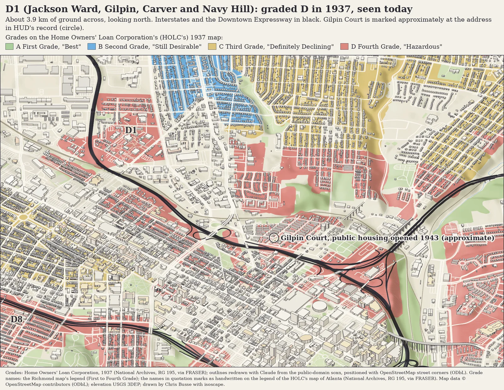
Fig. 12. D1 (Jackson Ward, Gilpin, Carver and Navy Hill), today, over the 1937 grades. What the 1937 form recorded: A population 95% Black, family incomes of $350 to $750 a year, one home in five lived in by its owner, and single houses forty years old and more in poor to very poor repair. It wrote that the population was falling "because of demolition to save taxes." [FRASER, Richmond area descriptions] What stands there now: I-95 and I-64 run 5.9 km of carriageway through it. The Richmond Housing Authority opened Gilpin Court, public housing, on cleared Apostle Town land in 1943, and VCU's medical campus now covers most of Navy Hill. About 10% of D1 lies west of Belvidere Street and north of Broad Street, in today's Carver. [measured here; Craig 2025; Gray-Sparks; City of Richmond civic-group maps]
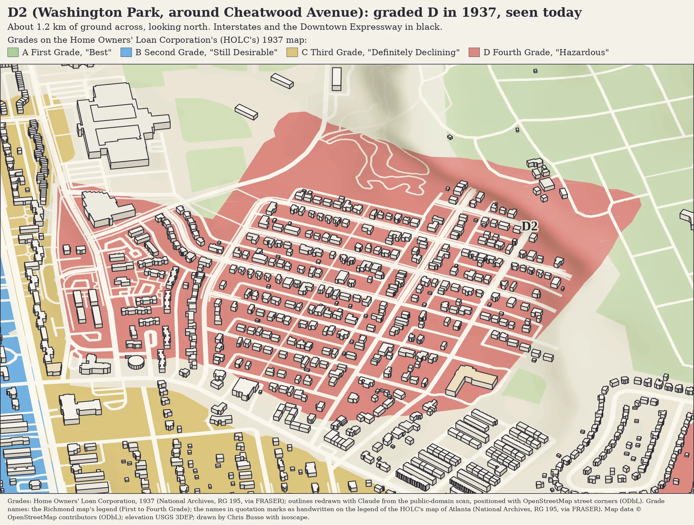
Fig. 13. D2 (Washington Park, around Cheatwood Avenue), today, over the 1937 grades. What the 1937 form recorded: Flat ground, frame single houses, a population entirely Black, family incomes of $350 to $750, and half the homes lived in by their owners. The form for C7, which borders it, faults C7 for lying too near D2, and the form for D4 calls this area Oak Park. [FRASER, Richmond area descriptions] What stands there now: The state's historical marker for Washington Park says emancipated African Americans settled here after the Civil War, and that two planned developments, Oak Park and Washington Park, later drew many residents. Of the 302 parcels the city dates here, 72% were built between 1938 and 1977. First Baptist Church of Washington Park stands inside the outline. [DHR, Washington Park; City of Richmond parcels; OpenStreetMap]
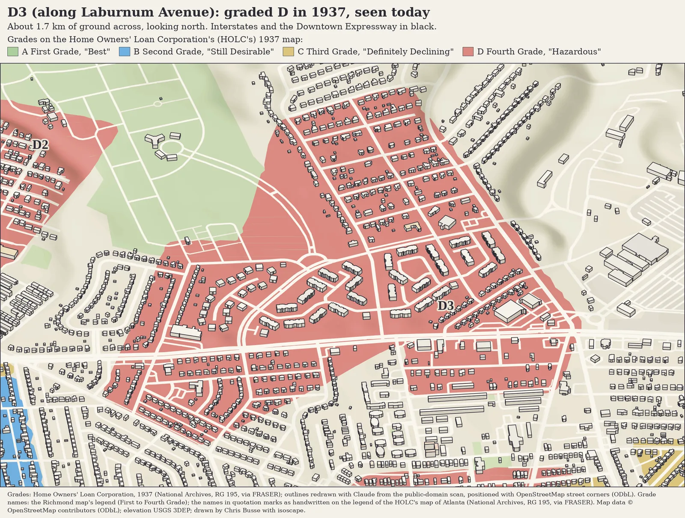
Fig. 14. D3 (along Laburnum Avenue), today, over the 1937 grades. What the 1937 form recorded: The form called the area "Mostly woods and bushes", with practically no homes, and recorded the few families there as Black. [FRASER, Richmond area descriptions] What stands there now: The woods are built over: OpenStreetMap maps 700 buildings inside the outline, with shops along Laburnum Avenue. The city's year-built parcels cover only 27 lots here, so when the buildings went up is not measured. The pale green field to the northwest is Forest Lawn Cemetery, in the drawing's color for parks and cemeteries; most of it lies outside the 1937 grades, and none of it is A. [OpenStreetMap; City of Richmond parcels]
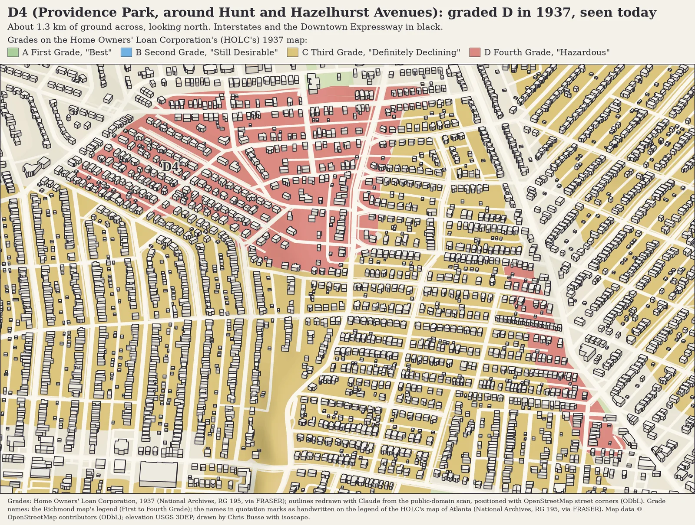
Fig. 15. D4 (Providence Park, around Hunt and Hazelhurst Avenues), today, over the 1937 grades. What the 1937 form recorded: Its only remark reads "Same as Oak Park, D2." It repeats D2's figures for values, rents, owners and mortgage money, and recorded a population entirely Black, frame single houses, and half the homes lived in by their owners. [FRASER, Richmond area descriptions] What stands there now: Of the 307 parcels the city dates here, 45% were built by 1937 and 49% between 1938 and 1977. Hunt and Hazelhurst Avenues lie in the area the City of Richmond's civic-group map gives the Providence Park Civic Association. [City of Richmond parcels; City of Richmond civic-group maps]
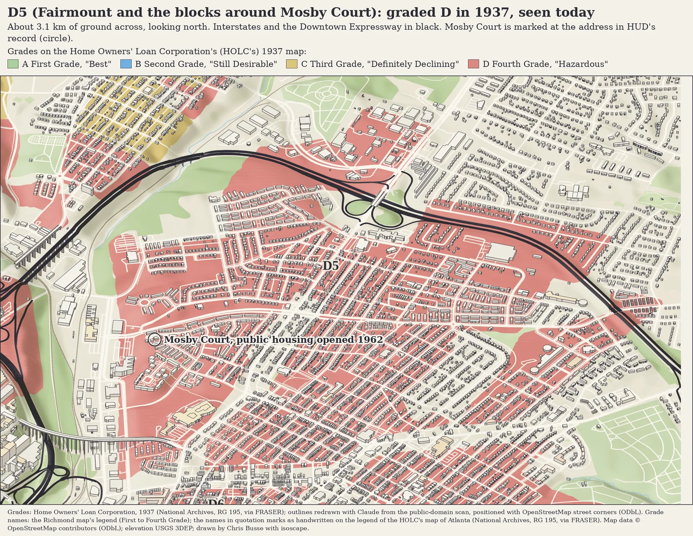
Fig. 16. D5 (Fairmount and the blocks around Mosby Court), today, over the 1937 grades. What the 1937 form recorded: A population 75% Black and growing, frame single houses about fifteen years old in fair repair, one home in three lived in by its owner, and mortgage money reported at 40% of appraisal. [FRASER, Richmond area descriptions] What stands there now: Interstate 64 runs 3.3 km of carriageway through it. Mosby Court, public housing, stands inside it. It opened in 1962, and many of the 1,300 people the City's 17th Street Urban Renewal Project displaced moved there. [measured here; Gray-Sparks; HUD via ProPublica]
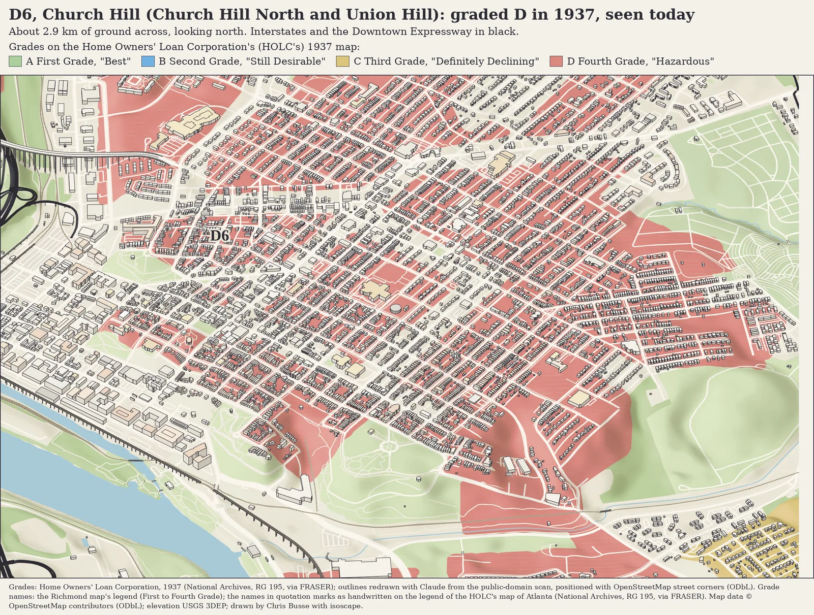
Fig. 17. D6, Church Hill (Church Hill North and Union Hill), today, over the 1937 grades. What the 1937 form recorded: The form is headed Church Hill and bounded by Venable Street, Nine Mile Road, Oakwood Cemetery, the Southern Railway, the river and 17th Street. It recorded a population 80% Black "and increasing", flats and single frame houses about forty years old in fair repair, one home in three lived in by its owner, and mortgage money reported at 50% of appraisal. [FRASER, Richmond area descriptions] What stands there now: More of 1937 stands here than in any other D area: 68% of the 2,953 parcels the city dates here were built by 1937. OpenStreetMap marks 449 of the 3,892 building outlines in the area as historic or heritage. The area takes in parts of what the city's maps call Church Hill North and Union Hill. [City of Richmond parcels; OpenStreetMap; City of Richmond civic-group maps]
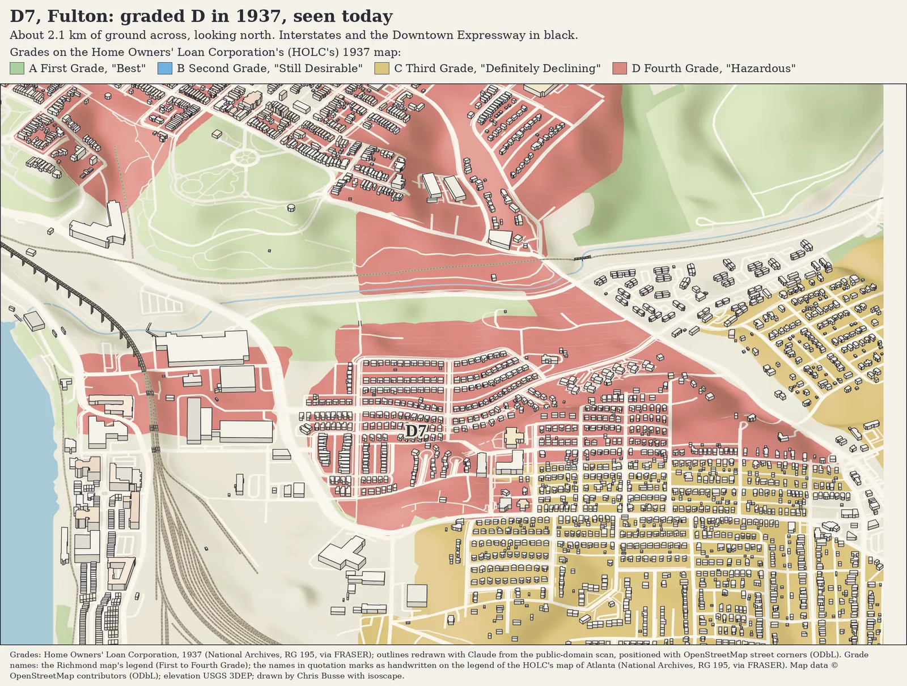
Fig. 18. D7, Fulton, today, over the 1937 grades. What the 1937 form recorded: The form is headed Fulton and bounded by Nicholson Street, National Cemetery Road and Williamsburg Avenue. It recorded a population 80% Black, single frame houses about fifty years old in bad repair, and one home in four lived in by its owner, and its field for mortgage funds for home purchase reads "None". [FRASER, Richmond area descriptions] What stands there now: In 1967 a study sponsored by the Richmond Redevelopment and Housing Authority (RRHA) designated Fulton Bottom, a neighborhood of about 850 homes, churches, schools and stores, a "slum". The 1970 renewal plan would displace about 785 households. The RRHA began buying and razing Fulton properties in the early 1970s, and the last homes on Denny Street came down in the late 1980s. Only 9% of the parcels the city dates here were built by 1937. Historic Fulton Memorial Park stands on the ground, and former residents tell the neighborhood's story in the Historic Fulton Oral History Project. [Gray-Sparks; City of Richmond parcels; OpenStreetMap; Historic Fulton Oral History Project]
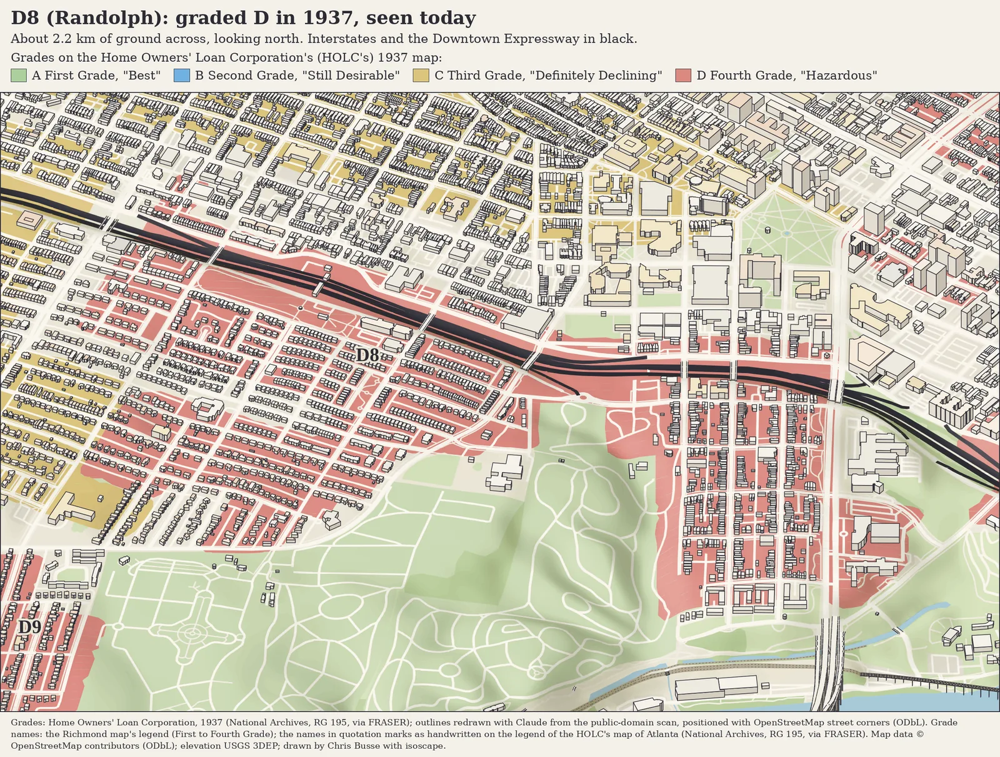
Fig. 19. D8 (Randolph), today, over the 1937 grades. What the 1937 form recorded: A population 95% Black, brick flats and frame single and double houses about 25 years old in fair repair, one home in four lived in by its owner, and mortgage money reported at 50% of appraisal. The form described Black families leaving D1 as displacing white residents, and called D8's houses "aged and obsolete structures". [FRASER, Richmond area descriptions] What stands there now: HUD approved the 380-acre Randolph Urban Renewal Project in 1973; its planning study expected about 1,800 families and individuals to be displaced, and Encyclopedia Virginia gives its aims as "slum clearance" and the Downtown Expressway. The expressway runs 3.3 km of carriageway through D8, and the Library of Virginia writes that it cut the Randolph and Oregon Hill neighborhoods in half. About a quarter of D8 (24 to 29%) lies in the Oregon Hill Historic District as the Valentine bounds it, a neighborhood the Valentine describes as white and blue-collar by the mid-1900s; the form's figures are for D8 as a whole. [Gray-Sparks; LVA timeline; measured here; The Valentine, Oregon Hill]
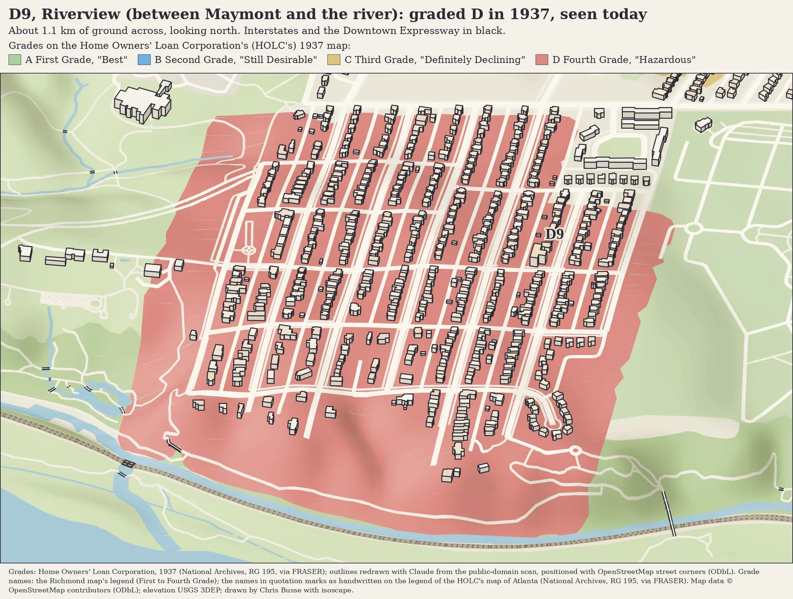
Fig. 20. D9, Riverview (between Maymont and the river), today, over the 1937 grades. What the 1937 form recorded: The form is headed Riverview. It recorded vacant land, "Practically undeveloped and inaccessible", and expected it to become a D area once built. [FRASER, Richmond area descriptions] What stands there now: It was built after the map: 95% of the 384 parcels the city dates here are from 1938 to 1977. Riverview Community Park lies inside the outline. [City of Richmond parcels; OpenStreetMap]
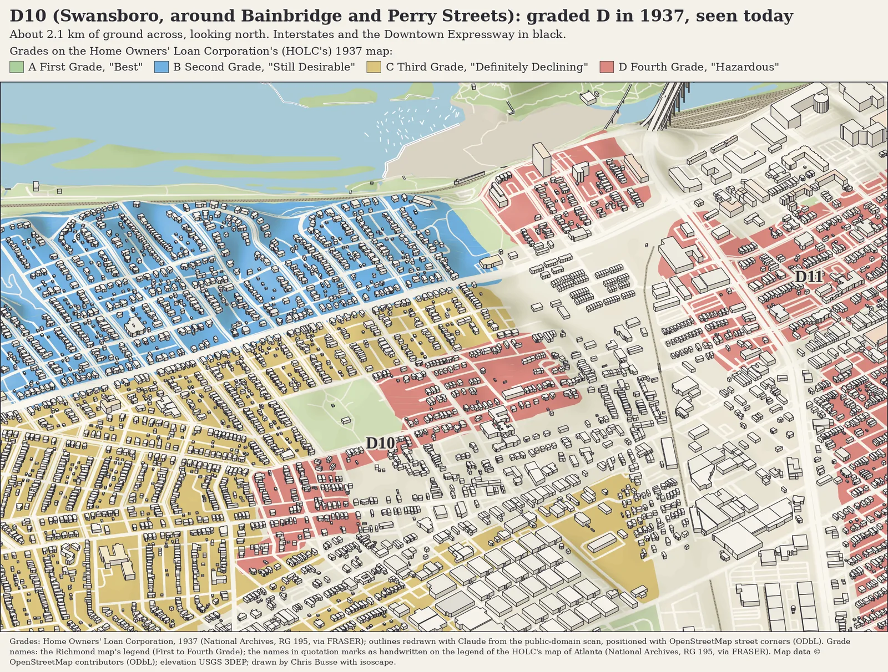
Fig. 21. D10 (Swansboro, around Bainbridge and Perry Streets), today, over the 1937 grades. What the 1937 form recorded: A population 95% Black, family incomes of $500 to $750, frame single houses 25 years old and older in poor repair, two homes in five lived in by their owners, and mortgage money reported at 50% of appraisal. [FRASER, Richmond area descriptions] What stands there now: Of the 232 parcels the city dates here, 56% were built by 1937. A Boys and Girls Club and the Fonticello Food Forest stand inside the outline, which lies in the area the city's civic-group map gives the Swansboro association. [City of Richmond parcels; OpenStreetMap; City of Richmond civic-group maps]
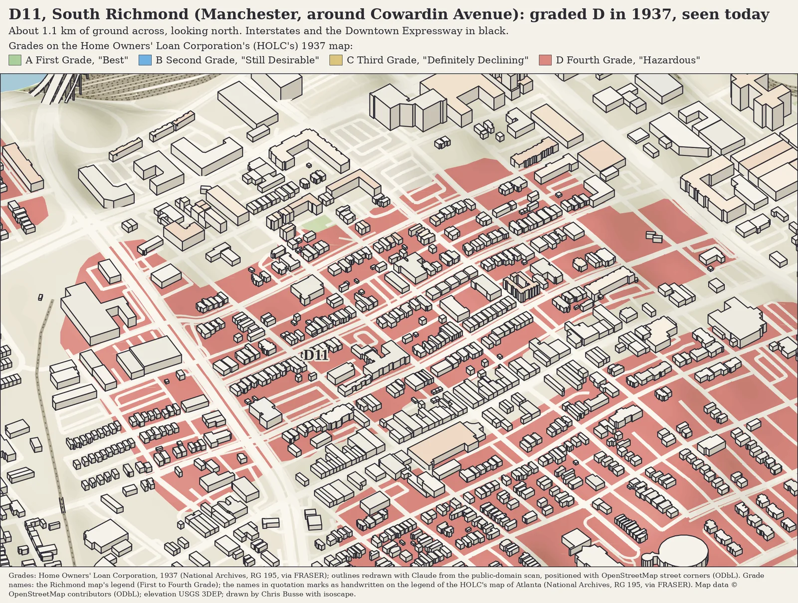
Fig. 22. D11, South Richmond (Manchester, around Cowardin Avenue), today, over the 1937 grades. What the 1937 form recorded: The only D area recorded as white; the form is headed South Richmond. It gave its people as "Laboring Whites", with family incomes of $1,500 to $1,800, the highest recorded for any D area, frame and brick houses about twenty years old in fair repair, three homes in five lived in by their owners, and mortgage money reported at 60% of appraisal. [FRASER, Richmond area descriptions] What stands there now: Of the 238 parcels the city dates here, 36% were built in 2000 or later, the largest share of any D area. Sacred Heart Catholic Church and the Hull Street post office stand inside the outline. [City of Richmond parcels; OpenStreetMap]
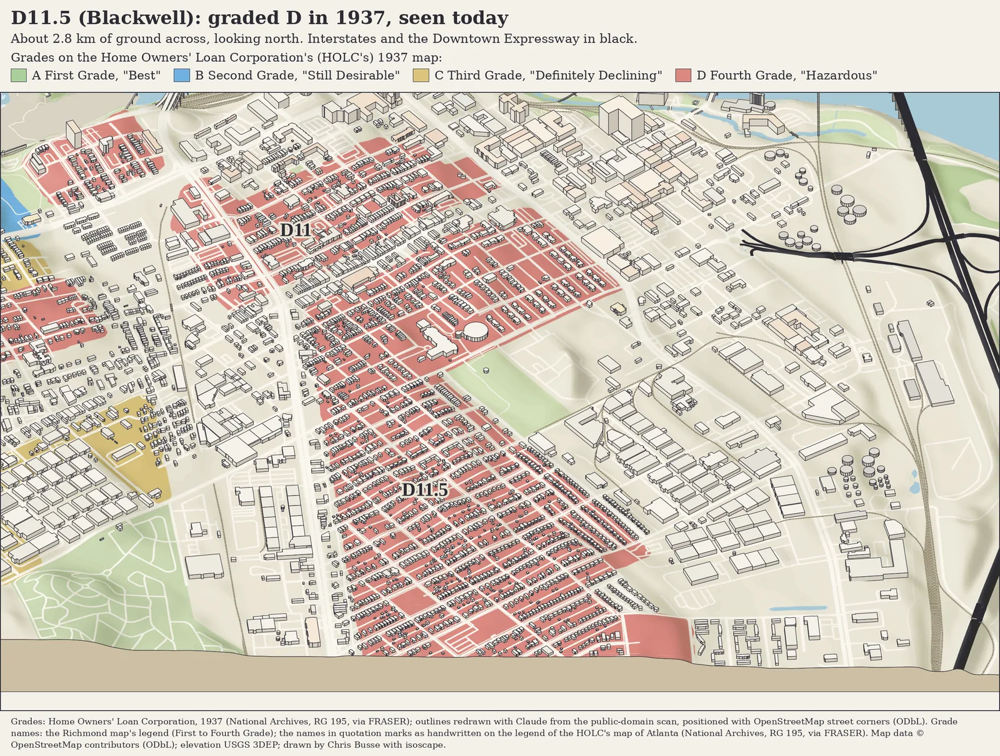
Fig. 23. D11.5 (Blackwell), today, over the 1937 grades. What the 1937 form recorded: A population 95% Black, family incomes of $500 to $750, frame single houses about 25 years old, about a third of the homes (35%) lived in by their owners, and mortgage money reported at 35 to 40% of appraisal. [FRASER, Richmond area descriptions] What stands there now: The neighborhood is named, through the school that bore his name from 1951, for James H. Blackwell, principal of Manchester's first school for Black students from 1888; when Richmond absorbed Manchester in 1910, the city allowed no Black principals, and he was made a teacher. In 1970, 464 scattered-site public housing units were built in the neighborhood. Of the 1,194 parcels the city dates, 41% were built between 1938 and 1977. [Kneebone, Blackwell; Eshleman 2018; City of Richmond parcels]
What the drawing adds to a flat map
Readers who know the 1937 maps have seen them flat, as colored shapes on a street map. Drawn on the ground, three things show that a flat map leaves out.
- The ground under the grades. The grades are draped on 2010s lidar and measured on it: the D land lies lowest, and the A land is the steepest.
- The buildings of 1937 at their true size. Lot sizes read directly, as in the Windsor Farms and Jackson Ward figures. Density in 1937 reads only where the Sanborn maps were traced: there Jackson Ward is drawn building by building as it stood, and only 13% of its 1952 outlines stand today.
- The highways measured against the grades. The interstates and the Downtown Expressway are drawn over the grades and measured inside them, area by area, against what each grade's location alone would predict.
The outlines themselves were redrawn from the National Archives scan and checked against Mapping Inequality's. The method and its gaps are set out next.
How we know: the redrawn map, the buildings and the measures
The redrawn map and the forms
- The grades. The outlines were redrawn in code, with Claude, from the National Archives' public-domain scan of the 1937 map (Record Group 195, via FRASER, the Federal Reserve Bank of St. Louis's digital library): each tint on the scan was traced, each area named from its printed label, and the whole placed on today's city by 33 street corners that stood in 1937, matched to OpenStreetMap. The fit is a single stretch-and-turn (affine) fit with a typical error of about 12 m over the 33 corners (root-mean-square): 3 to 5 m in the middle of the map, up to about 24 m at its edges [FRASER, Richmond; The redraw's notes].
- Checked against Mapping Inequality. Compared with Mapping Inequality's digitization, the two sets agree closely: grade by grade their land overlaps by 92 to 94%, D is 30% of graded land in this set and 30% in theirs, and the highway share in D is the same to within a point [Mapping Inequality]. Shifting every outline up to 24 m in any direction moves D's share of the highway between 63% and 65% (between 64% and 65% for 12 m); 2.1 km of D's highway lies within 25 m of a D edge.
- Pieces the map leaves unnumbered. The map numbers 48 areas and prints no number on some small tinted pieces. Four of them (a B block at Rodney, Wythe and Bethlehem Roads; two D blocks, on Canal and Byrd Streets and by Monroe Park; and a thin D strip along C10) keep their grade and belong to no numbered area here, so they count in the totals by grade and in no area's own figures. The redraw gave the other unnumbered pieces to the nearest area of their grade: a D strip along Meadowbridge Road to D4, the D pieces around D10's circle to D10, a D piece of about 24 ha east of D6 to D5, and a small C patch to C10. One D speck of about 0.5 ha, 2.2 km from any D label, is left out of every total. A5 and A3 share one green field whose printed dividing line has gaps; the line between them here is the redraw's estimate and is approximate. The story can be rebuilt from either set of outlines.
- The names of the areas. The 1937 form has no name field. Where a form carries a typed heading with a place name, that heading is the area's historic name, given exactly as the scan reads it: A5 Windsor Farms, D6 Church Hill, D7 Fulton, D9 Riverview and D11 South Richmond. The names in parentheses are today's, chosen to orient a reader and checked against the City of Richmond's civic-group maps; two of D1's are historic (Apostle Town is the neighborhood cleared for Gilpin Court, and VCU's campus covers most of Navy Hill), and about 10% of D1 lies in today's Carver. D2's form has no heading, but the D4 form reads "Same as Oak Park, D2." (scan p. 40, field 14), and the state's historical marker names Oak Park as one of the two developments that became Washington Park [DHR, Washington Park]. D8 is named for Randolph alone: about a quarter of D8 lies in the Oregon Hill Historic District, which the Valentine describes as white by the mid-1900s, and the D8 form describes a population 95% Black [The Valentine, Oregon Hill].
- The forms' words. Every form value and quotation this page uses was read on the National
Archives scan (FRASER,
ad_RichmondVA.pdf, one page per area in grade order) in November 2026, and quotations keep the scan's capitals and spelling. To find our way we used the transcription on Mapping Inequality, the work of students and volunteers with the University of Richmond's Digital Scholarship Lab and its partners, which made these forms searchable. Where the scan and the transcription differ, this page follows the scan. The differences that change something on this page, each confirmed by two separate readings of the scan, are D4's remark, which names D2 as Oak Park; D2's family incomes ($350 to $750); D11.5's share of owner-occupied homes (35%); and D10's houses, "25 years and older".
The buildings
- Buildings of 1937. A 1937 picture draws the buildings standing today that the city's assessor dates to 1937 or before, plus, in Jackson Ward, the buildings on the 1925 and 1952 Sanborn maps. Buildings since lost elsewhere are missing. This survivorship undercount is largest where most was cleared, which is in D. Where the 1952 sheets were traced, only 13% of their 3,158 outlines stand today. The assessor's years also cluster on round numbers, which are estimates, and a parcel is counted once whatever stands on it.
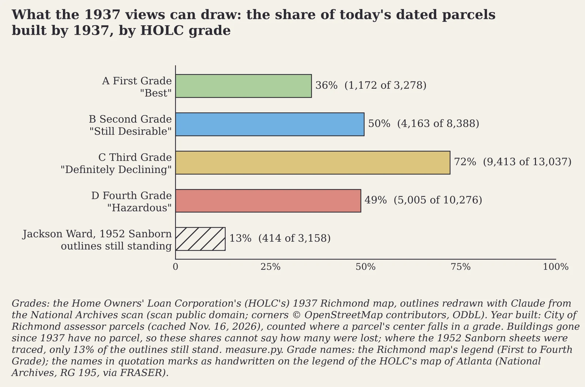
Fig. 24. The share of today's dated parcels built by 1937, by grade, and beside it the share of Jackson Ward's 1952 buildings still standing. How this was made: the city's year-built parcels, each counted in the grade its center falls in. The shares say nothing of how many buildings were lost, which is why the Jackson Ward bar is shown beside them.
- What stands now in each D area comes from OpenStreetMap as fetched on November 16, 2026, and from the city's year-built parcels. In D3 the parcels date only a few of the buildings, so their years are not given there.
The measures
- Elevation and slope by grade are read from the same 5 m lidar grid at every node inside each grade's outlines; the grid is today's ground, so the highways' cuts are in it.
- Areas and lengths are measured in code on a local plane. Each grade's land is its outlines
merged. Highway length is OpenStreetMap's highway category (
motorway), each carriageway counted, ramps left out; with ramps, D holds 66%. "The citywide view" is the frame of the citywide pictures; "the cached data" is the whole OpenStreetMap extract the pictures are drawn from, which reaches past the frame. Every percentage is rounded once, from the unrounded measure. - The fair comparison for the highways. The center is the Virginia State Capitol, as OpenStreetMap outlines it. Distances are read on a 50 m grid. The location-only expectation shares the highway inside graded land in each 1 km ring about the Capitol among the grades by their land in that ring. "Ungraded land" is the citywide view less all graded land.
- Public housing addresses. Each court's addresses in its HUD record were matched to OpenStreetMap's address points and placed on the 1937 grades.
- The frame holds all of A and B, 99% of D and 92% of C. C14 lies wholly outside it and 73% of C13; smaller parts of C6 (12%), D11.5 (10%) and C12 (3%) do too. Every area is measured whole, inside the frame or not.
- The ground is 2010s lidar, heights drawn three times true. In Jackson Ward the Turnpike's cut is filled for 1937 by the estimate the Jackson Ward story made.
- The grade colors are the HOLC's green, blue, yellow and red, softened; every picture carries a key with the four grades as Richmond's legend names them and the HOLC's names in quotation marks, so the colors never have to be read alone.
- The code is in the isoscape repository:
tools/holc/redraws the outlines, andtools/stories/redlining/holds the measures, charts and pictures, with every computed number in one file.
Why this page stops at 1977
This story ends in 1977, the year Congress passed the Community Reinvestment Act. A later addendum, "1977 to today", may follow here.
Glossary of terms used on this page
- HOLC: the Home Owners' Loan Corporation, a federal agency created in 1933 to refinance the mortgages of home owners in distress.
- FHA: the Federal Housing Administration, established in 1934, the federal agency that insured mortgages made by private lenders.
- Residential security map: the title on Richmond's HOLC map, "Residential Security Map", and the Library of Virginia's name for the HOLC's color-coded maps, made from 1935 to 1940.
- Grade: the HOLC's rating of an area, A to D: First to Fourth Grade on Richmond's map, and "Best", "Still Desirable", "Definitely Declining" and "Hazardous" handwritten on the legend of the HOLC's map of Atlanta.
- Area description: the printed form the surveyors filled in for each graded area.
- Redlining: from the red of the D grade; the word for lenders' refusing credit by neighborhood.
- Covenant: a clause in a deed restricting who may buy or live in a house.
- Racial Integrity Act: the Virginia law on race and marriage on which Richmond based a housing ordinance, which barred residents from neighborhoods where they could not marry a member of the majority population.
- Urban renewal: federally funded clearance and rebuilding of areas a city declared blighted.
- Sanborn map: a fire-insurance map drawn building by building, used here for Jackson Ward.
- Parcel: a lot in the city assessor's records, which gives a year built.
- Lidar: elevation measured from the air by laser; here, 5 m elevation grids from the US Geological Survey.
- Vertical exaggeration: heights drawn three times true, so the hills read.
- OpenStreetMap: the volunteer-made map of the world, the source of today's buildings, streets and highways here.
- Limited-access highway: a road entered only by ramps; OpenStreetMap's
motorway. - Carriageway: one direction of a divided highway; each is counted.
- FRASER: the Federal Reserve Bank of St. Louis's digital library, which holds the National Archives scans of the HOLC's maps and forms.
- ODbL: the Open Database License, under which OpenStreetMap's data is published.
Whose work this rests on
The 1937 maps were digitized and published, here in Richmond, by the University of Richmond's Digital Scholarship Lab for Mapping Inequality (Robert K. Nelson, LaDale Winling and others). This page's outlines were redrawn from the National Archives scan, and the Lab's digitization was used to check them; its transcriptions of the area descriptions guided the reading of the forms throughout. The map and forms are in the National Archives. The story of Richmond's segregation and urban renewal has been told by LaToya Gray-Sparks in Encyclopedia Virginia, by the Library of Virginia's Mapping Inequality exhibition and Ashley Craig's history of public housing, and by many others, among them John V. Moeser, Julian Maxwell Hayter, the Science Museum of Virginia, Housing Opportunities Made Equal (HOME) and VCU, whose work this page has not drawn on directly. Nothing here is taken from their visual work.
The histories of these neighborhoods are kept by the people who lived them and the institutions they built:
- The Black History Museum & Cultural Center of Virginia, at 122 West Leigh Street in Jackson Ward.
- The Historic Jackson Ward Association, the neighborhood's civic association, which keeps a history of the ward.
- The JXN Project, a historic preservation nonprofit founded in 2021 to tell Jackson Ward's history, which partnered with the Library of Virginia on the exhibition House to Highway, shown from July 2025 to February 2026 [LVA, House to Highway].
- The Historic Fulton Oral History Project, interviews with former residents of Fulton recorded in 2011 and 2012, organized with The Valentine, which holds the materials, and published by VCU Libraries [Historic Fulton Oral History Project].
Corrections
None yet. Each correction to this page will be listed here with its date.
Sources
Opened while drafting, on the date given.
Mapping Inequality
Nelson, Robert K., LaDale Winling, et al. "Mapping Inequality: Redlining in New Deal America." Edited by Robert K. Nelson. American Panorama: An Atlas of United States History, 2023. https://dsl.richmond.edu/panorama/redlining. Its spatial data (CC BY-NC 2.5, https://creativecommons.org/licenses/by-nc/2.5/), downloaded November 21, 2026, was used only to check the redrawn outlines and is not drawn on this page.
HOLC area descriptions
The 1937 Richmond forms as transcribed by the Digital Scholarship Lab, https://github.com/americanpanorama/HOLC_Area_Description_Data (form 19370203), downloaded November 21, 2026. The repository states no license; the forms themselves are public-domain federal records. Every quotation and figure used here was read on the scan (next entry).
HOLC area description A5
The A5 form, Windsor Farms: scan page 5 (see the next entry), read November 22, 2026.
HOLC area description D1
The D1 form: scan page 37 (see the next entry), read November 22, 2026.
FRASER, Richmond area descriptions
The 1937 Richmond area descriptions, National Archives RG 195, via FRASER, https://fraser.stlouisfed.org/files/docs/historical/maps/redline_nara/ad_RichmondVA.pdf; public domain. Every form quoted or paraphrased here read on the scan November 22, 2026 (A5 page 5, C4 page 26, C7 page 29, D1 to D11 pages 37 to 46 and 48, D11.5 page 47).
FRASER, Richmond
"Residential Security Map", Home Owners' Loan Corporation, Division of Research & Statistics, April 3, 1937, drawn on the city's base map "City of Richmond, Virginia and Environs" (Department of Public Works, 1923, revised to August 1, 1936), National Archives RG 195, via FRASER, Federal Reserve Bank of St. Louis, https://fraser.stlouisfed.org/archival/6751/item/619201 (opened November 22, 2026); the scan the outlines were redrawn from, https://fraser.stlouisfed.org/files/docs/historical/maps/redline_nara/rg195_holc_Richmond_VA.pdf (fetched November 22, 2026; public domain), whose legend was read the same day.
FRASER, Atlanta
"Map of Greater Atlanta", the HOLC's residential security map of Atlanta, National Archives RG 195, via FRASER, https://fraser.stlouisfed.org/files/docs/historical/maps/redline_nara/rg195_holc_Atlanta_GA.pdf (opened November 22, 2026; public domain), for its legend.
National Archives, RG 195
National Archives, Guide to Federal Records, Records of the Federal Home Loan Bank Board, RG 195, https://www.archives.gov/research/guide-fed-records/groups/195.html (opened November 22, 2026). Public domain.
The redraw's notes
"Richmond 1937 HOLC grades: redrawn from the public-domain scan, compared with Mapping
Inequality", drafted with Claude for Chris Busse, November 22, 2026, and tools/holc/README.md
in the isoscape repository, https://github.com/busse/isoscape; the fit's error and the
unnumbered pieces.
Harriss 1951
C. Lowell Harriss, History and Policies of the Home Owners' Loan Corporation, National Bureau of Economic Research, 1951, chapter 2, "Original Lending Activities", https://www.nber.org/chapters/c3207.pdf (opened November 22, 2026).
Rose 2022
Jonathan Rose, "Revisiting How Two Federal Housing Agencies Propagated Redlining in the 1930s", Federal Reserve Bank of Chicago, April 2022, https://www.chicagofed.org/research/content-areas/mobility/policy-brief-federal-housing-programs-redlining (opened November 22, 2026).
FRED 2021
"Residential segregation and redlining", FRED Blog, Federal Reserve Bank of St. Louis, September 9, 2021, https://fred.stlouisfed.org/blog/2021/09/residential-segregation-and-redlining (opened November 22, 2026).
Northwestern IPR 2024
"Remembering John McKnight, Community Development Pioneer (1931–2024)", Institute for Policy Research, Northwestern University, November 15, 2024, https://www.ipr.northwestern.edu/news/2024/remembering-john-mcknight.html (opened November 22, 2026).
CFPB, HMDA
Consumer Financial Protection Bureau, "Mortgage data (HMDA)", https://www.consumerfinance.gov/data-research/hmda/ (opened November 22, 2026).
Federal Reserve, CRA
Board of Governors of the Federal Reserve System, "Community Reinvestment Act (CRA)", https://www.federalreserve.gov/consumerscommunities/cra_about.htm (opened November 22, 2026).
Aaronson et al. 2021
Daniel Aaronson, Daniel Hartley and Bhashkar Mazumder, "The Effects of the 1930s HOLC 'Redlining' Maps", American Economic Journal: Economic Policy 13(4): 355–392, 2021, https://doi.org/10.1257/pol.20190414; abstract opened at https://ideas.repec.org/a/aea/aejpol/v13y2021i4p355-92.html, November 22, 2026. The full text read is the authors' revision of August 2020, Federal Reserve Bank of Chicago Working Paper 2017-12, https://www.chicagofed.org/~/media/publications/working-papers/2017/wp2017-12-pdf (opened November 22, 2026), for the boundary gaps, their timing and the FHA's share in them.
Aaronson et al. 2022
Daniel Aaronson, Bhashkar Mazumder, Daniel Hartley and Martha Stinson, "The Long-run Effects of the 1930s Redlining Maps on Children", Federal Reserve Bank of Chicago Working Paper 2022-13, April 2022, https://www.chicagofed.org/-/media/publications/working-papers/2022/wp2022-13-pdf.pdf (opened November 22, 2026).
Fishback et al. 2023
Price V. Fishback, Jessica LaVoice, Allison Shertzer and Randall Walsh, "The HOLC Maps: How Race and Poverty Influenced Real Estate Professionals' Evaluation of Lending Risk in the 1930s", Journal of Economic History 83(4): 1019–1056, December 2023, https://doi.org/10.1017/S0022050723000475 (open access; full text opened November 22, 2026).
Fishback et al. 2024
Price V. Fishback, Jonathan Rose, Kenneth A. Snowden and Thomas Storrs, "New Evidence on Redlining by Federal Housing Programs in the 1930s", Journal of Urban Economics 141: 103462, May 2024 (online 2022), https://doi.org/10.1016/j.jue.2022.103462; citation opened at https://experts.arizona.edu/en/publications/new-evidence-on-redlining-by-federal-housing-programs-in-the-1930/, and the full text of its working paper, NBER Working Paper 29244, September 2021, https://www.nber.org/papers/w29244, opened November 22, 2026.
Hillier 2003
Amy E. Hillier, "Redlining and the Home Owners' Loan Corporation", Journal of Urban History 29(4): 394–420, 2003; author's postprint, https://core.ac.uk/download/76393191.pdf (full text opened November 22, 2026), listed at https://repository.upenn.edu/cplan_papers/3.
Michney 2022
Todd M. Michney, "How the City Survey's Redlining Maps Were Made: A Closer Look at HOLC's Mortgagee Rehabilitation Division", Journal of Planning History 21(4): 316–344, 2022, https://doi.org/10.1177/15385132211013361. Not opened (the publisher's page could not be read from here); cited for readers to consult.
Winling and Michney 2021
LaDale C. Winling and Todd M. Michney, "The Roots of Redlining: Academic, Governmental, and Professional Networks in the Making of the New Deal Lending Regime", Journal of American History 108(1): 42–69, 2021, https://doi.org/10.1093/jahist/jaab066. Not opened (as above); cited for readers to consult.
LVA timeline
Library of Virginia, "Mapping Inequality timeline", https://www.lva.virginia.gov/events/exhibitions/online/oe/exhibits/show/mapping-inequality/mapping-inequality-timeline (opened November 22, 2026).
LVA, House to Highway
Library of Virginia, "House to Highway: Reclaiming a Community History", exhibition, July 14, 2025, to February 28, 2026, https://www.lva.virginia.gov/events/exhibitions/house-to-highway (opened November 22, 2026).
City of Richmond, Jackson Ward
City of Richmond, Planning and Development Review, "Jackson Ward", https://www.rva.gov/planning-development-review/jackson-ward (opened November 22, 2026).
City of Richmond civic-group maps
City of Richmond, Geographic Information Systems, civic association maps for Providence Park, https://www.rva.gov/sites/default/files/Planning/PDFDocuments/UsefulLinks/CivicGroupMaps/ProvidenceParkCivicAssociation.pdf; Union Hill, https://www.rva.gov/sites/default/files/Planning/PDFDocuments/UsefulLinks/CivicGroupMaps/UnionHillCivicAssociation.pdf; Carver, https://www.rva.gov/sites/default/files/Planning/PDFDocuments/UsefulLinks/CivicGroupMaps/CarverAreaCivicImprovementLeague.pdf; and Swansboro, https://rva.gov/sites/default/files/2025-10/SwansboroCivicAssociation.pdf; and the Church Hill North City Old & Historic District map, https://www.rva.gov/sites/default/files/Planning/PDFDocuments/PlanningPreservation/CAR/Maps%20of%20Districts/ChurchHillNorth.pdf (each opened November 22, 2026).
Gray-Sparks
LaToya Gray-Sparks, "Urban Renewal in Richmond", Encyclopedia Virginia, September 19, 2024, last updated November 7, 2025, https://encyclopediavirginia.org/entries/urban-renewal-in-richmond/ (opened November 22, 2026).
Kneebone, Blackwell
John T. Kneebone and the Dictionary of Virginia Biography, "James H. Blackwell (ca. 1864–1931)", Encyclopedia Virginia, https://encyclopediavirginia.org/entries/blackwell-james-h-ca-1864-1931/ (opened November 22, 2026).
Craig 2025
Ashley Craig, "A Brief History of Public Housing in the City of Richmond", UncommonWealth, Library of Virginia, November 17, 2025, https://uncommonwealth.lva.virginia.gov/blog/2025/11/17/a-brief-history-of-public-housing-in-the-city-of-richmond (opened November 22, 2026).
Eshleman 2018
Tina Eshleman, "House of Blackwell", Richmond Magazine, August 23, 2018, https://richmondmagazine.com/news/features/house-of-blackwell/ (opened November 22, 2026).
DHR, Washington Park
Virginia Department of Historic Resources, "Virginia Dedicates Historical Marker about Historically African American Neighborhood in Richmond", September 12, 2024, with the marker's text, https://www.dhr.virginia.gov/press-release-posts/washington-park-historic-african-american-community-richmond-highway-marker/ (opened November 22, 2026).
The Valentine, Oregon Hill
The Valentine, "Oregon Hill" self-guided tour, https://thevalentine.org/wp-content/uploads/2024/12/Valentine-self-guided-tour-Oregon-Hill-WEB.pdf (opened November 22, 2026), for the historic district's bounds.
Historic Fulton Oral History Project
Brian McNeill, "Via online oral history project, residents of demolished African-American neighborhood share their stories", VCU News, April 27, 2015, https://news.vcu.edu/article/via_online_oral_history_project_residents_of_demolished_africanamerican (opened November 22, 2026).
VCU Libraries
"Interstate Highways", in the exhibit MCV Aerial Photography, VCU Libraries Gallery, https://gallery.library.vcu.edu/exhibits/show/mcv-aerial-photography/interstate-highways (opened November 22, 2026).
HUD via ProPublica
HUD's property records for Richmond's public housing, as published by ProPublica: Gilpin Court (VA007000001, 1000 St Paul St), https://projects.propublica.org/hud/properties/VA007000001; Hillside Court, https://projects.propublica.org/hud/properties/VA007000004; Creighton Court, https://projects.propublica.org/hud/properties/VA007000005; Whitcomb Court, https://projects.propublica.org/hud/properties/VA007000006; Fairfield Court, https://projects.propublica.org/hud/properties/VA007000007; and Mosby Court (VA007000008, 1909 Accommodation St), https://projects.propublica.org/hud/properties/VA007000008 (opened November 22, 2026), for their addresses.
TCLF, Windsor Farms
The Cultural Landscape Foundation, "Windsor Farms", https://www.tclf.org/landscapes/windsor-farms (opened November 22, 2026).
City of Richmond parcels
The City of Richmond's Year_of_Construction parcels, https://services1.arcgis.com/k3vhq11XkBNeeOfM/ArcGIS/rest/services/Year_of_Construction/FeatureServer/0, cached November 16, 2026; year only, no owner fields. The city's service states no license or terms of use.
OpenStreetMap
Map data © OpenStreetMap contributors, under the Open Database License (ODbL), https://www.openstreetmap.org/copyright, fetched November 16, 2026.
Elevation and Sanborn maps
Elevation: USGS 3D Elevation Program (public domain). Sanborn maps: Library of Congress, Geography and Map Division, Sanborn Maps Collection; the Library states that its online Sanborn collection is in the public domain and free to use and reuse (https://data.labs.loc.gov/sanborn/README.html, opened November 22, 2026).
How this page was made
The text was drafted by Claude for Chris Busse, from sources opened while drafting, and every
claim was checked against them. The maps are drawn by Chris with isoscape, the tool he draws
with, built with Claude; the tinting, measures and charts were done in code from the same data as
the maps (tools/stories/redlining/). See the artist statement for how
Chris works with the tool. Nothing here is for sale.
Read this as a PDF: phone edition, large-screen edition